Du contenu qui
remplit les tables
Une bonne cuisine mérite d’être vue. J’aide les restaurants à être trouvés sur Google Maps, sur Google et dans les réponses de l’IA, puis à transformer ces recherches en visites.
Fiche Google Business, mots-clés et SEO on-page pour que les gens qui ont faim vous trouvent sur Google et dans les recherches IA.
Textes de site web, descriptions de plats et newsletters qui rendent vos plats aussi bons à lire qu’à goûter.
Des séries de contenus Instagram et TikTok : posts, carrousels et Reels, avec une direction visuelle claire et des légendes à votre image.
Une analyse claire de votre présence sur Instagram, TikTok et Google, avec les actions rapides qui font venir plus de monde.
Tester ma visibilité →J’écris et je réponds à vos avis en français, en anglais et en arabe, pour parler à tous vos clients, y compris les touristes et la clientèle internationale.
12 questions, 3 minutes. Vous obtenez votre score de visibilité et vos 3 priorités, gratuitement et sans engagement.
Commencer le test →Parlez-moi de votre restaurant, ou commencez par le test de visibilité gratuit.